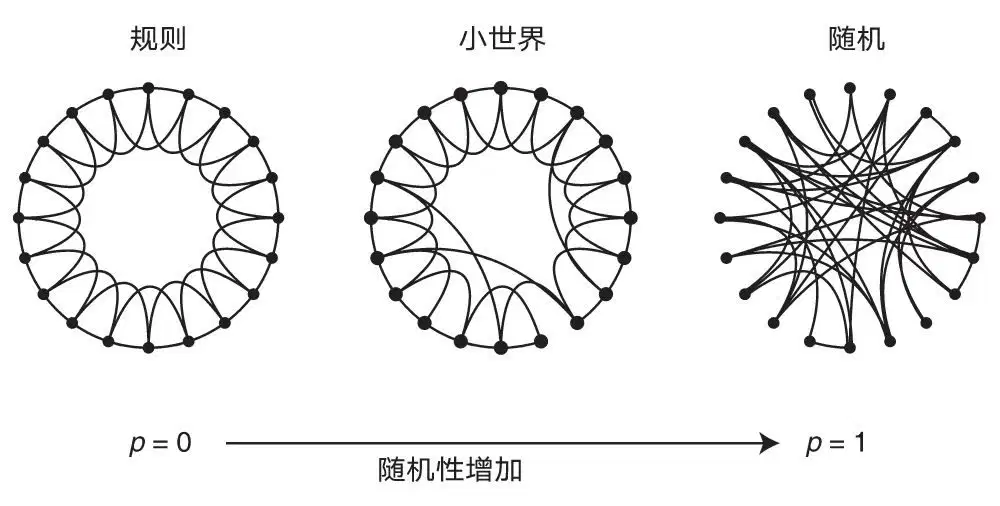
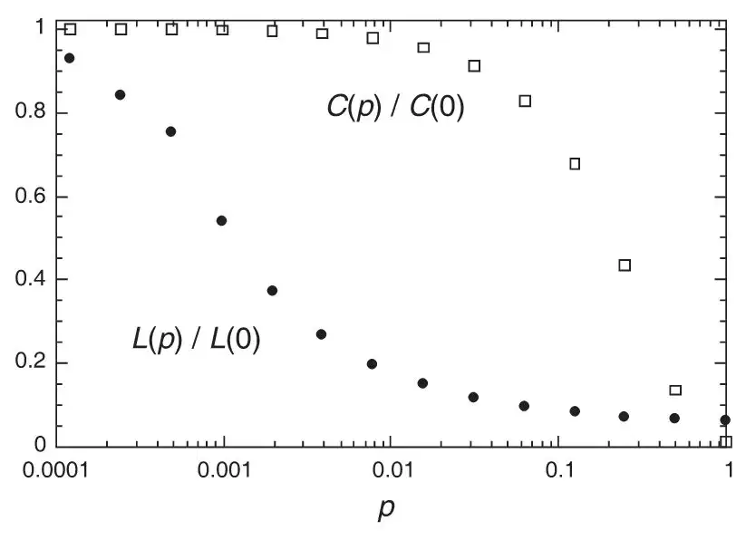
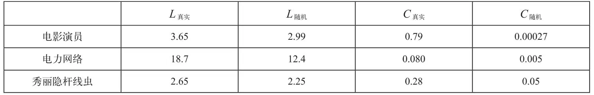
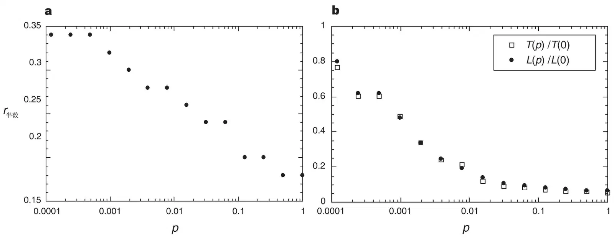

英文
英文沃茨，斯特罗加茨
编者按
我们生活在一个网络世界里：从人类社会网络和生物食物网到神经系统、运输网络和现代互联网。本文中，邓肯·沃茨和史蒂文·斯特罗加茨证明了这些网络通常具有惊人的结构相似性。最值得注意的是，它们是“小世界”，因为即使在包含大量元素的网络中，也只需要几个步骤就可以沿着链路从一个点移动到另一个点。这种网络也倾向于高度“集群化”，许多冗余路径使得它们连接在一起成为一个整体，从而对链路的移除具有恢复力。本文提供了一个新的概念框架来分析复杂网络，促进了复杂网络研究工作的爆炸式增长。 英文
耦合动力系统网络已被广泛应用于生物振荡[1-4]、约瑟夫森结阵列[5,6]、可激发介质[7]、神经网络[8-10]、空间博弈[11]、基因控制网络[12]以及多种其他自组织系统的建模。通常情况下，其拓扑结构被认为或是完全规则的，或是完全随机的。但是许多生物、技术和社会的网络介于这两种极端状况之间。本文阐述了一种处于这种中间态的简单的网络模型：将规则网络“重新连接”来引入更多无序性。我们发现这些系统可以像有序晶格一样被高度集聚，同时具有很小的特征路径长度，类似随机图。通过与小世界现象[13,14]（人们所熟知的六度分隔[15]）的类比，我们称它们为“小世界”网络。秀丽隐杆线虫的神经网络、美国西部的电力网络以及电影演员的合作图都表现为小世界网络。具有小世界耦合的动力系统模型显示了更强的信号传播速度、计算能力和同步性。特别需要指出的是，传染病在小世界网络中传播要比在规则网络中传播更容易。 英文
为了实现规则网络和随机网络之间的中间状态，我们来考虑以下的随机重连过程（图1）。从一个具有n个顶点，每个顶点k条边的环形晶格网络开始，我们以概率p随机地将每条边重新连接。这种构造允许我们在规则（p=0）和无序（p=1）之间“调谐”，从而探索目前被了解得很少的0<p<1的中间区域。 英文

图1．随机重新连接来制造处于规则环形晶格网络和随机网络之间的状态，而顶点和边的数量不变。我们从一个具有n个顶点的环开始，每个顶点都与最近的k个相邻顶点通过无向边相连。（为了表述清晰，图中的例子取n=20，k=4，但在文中的其他部分我们取了更大的n和k值。）我们选取一个顶点以及顺时针方向上连接该顶点和最近邻点的边。以概率p将这条边重新连接到整个环上随机选取的任一顶点，不允许有重复连接的边；否则保持该边不动。我们沿环的顺时针方向重复这个过程，按顺序考虑到每个顶点直到一圈完成。接下来，我们考虑连接顶点与其顺时针方向第二近邻点的边。像上次操作一样，我们以概率p随机地重新连接这些边，然后我们重复这个过程，沿环循环，并在每一圈之后对连接更远近邻点的边继续该操作，直到每条原始网络中的边都被考虑到为止。（因为整个图中共有nk/2条边，所以重新连接过程在k / 2圈后结束。）图中表示了不同p时，该过程的三种实现方式。p=0时，原始环不变；随p增大图形无序性开始增加，到p=1时，所有的边都被随机地重新连接。我们得出的一个主要结论是，对于p处于中间值时，图为一小世界网络：像规则图一样高度集聚，又像随机图一样具有很小的特征路径长度。（见图2） 英文

图2．特征路径长度L(p）与图1中所描述的随机重连图形的集聚系数C(p）的关系。L被定义为两顶点之间最短路径上的边的数量，为所有顶点对的平均值。集聚系数C(p）按下述定义。假设一顶点v有kv个邻点；那么至多有kv(kv－1) / 2条边连接它们（这种情况发生在v的每个邻点都与v的所有其他邻点相连）。用Cv来表示真正存在的边占这些所有被允许出现的边的比例。定义C为所有的顶点v对应Cv的平均值。对于朋友关系网络，这些统计数据有着直观的含义：L为两个人之间最短链中朋友关系的平均数；Cv反映v的朋友中有多少互相之间也是朋友；因而C测量朋友关系圈的小集团性。图中所示的数据为图1中所描述的20种随机重连过程的平均值，并相对规则晶格网络的L(0）和C(0）进行了归一化。所有的图形都有n=1,000个顶点，每个顶点平均有k=10条边。我们使用对数横坐标以解决L(p）骤降的问题，对应小世界现象的开始。在这个骤降过程中，规则晶格网络的C(p）基本保持不变，也就意味着网络结构向小世界的转变在局域上是无法探测的。 英文
通过它们的特征路径长度L(p)和集聚系数C(p)（图2注给出了这两项的定义），我们将这些图形的结构属性进行量化。这里L(p)测量图形中两顶点之间的分隔（一种全局属性），而C(p)测量近邻顶点间的小集团性（一种局域属性）。我们感兴趣的网络有很多顶点但连接很稀疏，但是没有稀疏到存在使图断开的危险。具体地讲，我们要求n ≫ k ≫ ln(n) ≫ 1，其中k ≫ ln(n)确保了随机图会被连接[16]。在这种机制下，我们发现当p→0时，L~n / 2k ≫ 1，C~3 / 4，而当p→1时，L≈L随机~ln(n) / ln(k)，C≈C随机~k / n ≪ 1。因此在p=0时的规则晶格网络是一高度群聚、L随n线性增加的大世界，而p=1时的随机网络是一低群聚、L只随n对数增长的小世界。这些带有限制性的情况很可能让人们认为大的C永远与大L相关，而小C与小L相关。 英文
相反地，图2揭示了在L(p)小到与L随机接近，但C(p) ≫ C随机时，p存在一个很宽的跨度。这些小世界网络源于由若干远程边的引入而引起的L(p)的骤降。这样的“捷径”连接起了原本要相隔较L随机远很多的顶点。对于小的p来说，每一条捷径都产生很强的非线性效应作用于L，不仅仅缩短了它所连接的顶点之间的距离，而且还缩短了它们与直接邻点之间的距离，以及与邻点的邻点之间的距离，等等。相比之下，从群聚的邻点中移除用于制造捷径的一条边，最多产生线性效应作用于C；因此对于小的p即使L(p)迅速减小，C(p)也仍保持不变。这里的一个很重要的启示是，就局部而言（通过C(p)所反应的），向小世界的转变几乎无法探测。为了检验这些结果的稳健性，我们测试了多种不同类型的初始规则图，以及随机重连的不同算法，所有的测试都给出性质类似的结果。唯一的要求是重新连接的边通常必须连接原本比L随机远很多的顶点。 英文
以上理想的构造揭示了捷径的核心作用。它意味着小世界现象在多顶点的稀疏网络中很普遍，很少的捷径就满足要求。为了验证这个想法，我们计算了故事片电影中演员的合作图（数据由http://us.imdb.com提供）、美国西部的电力网络以及秀丽隐杆线虫神经网络[17]这三个图的L和C。所有这三个图都引起了科学界的兴趣。电影演员合作图是社会网络的代表[18]，具有很容易被细化定义的优势。它也与传统上的、以保罗·埃尔德什为中心的数学合作图相似（部分数据可以在http://www.acs.oakland.edu/~grossman/erdoshp.html上获得）。电力网络的图与电力网络的效率和稳定性相关[19]。而秀丽隐杆线虫是完整的神经网络的唯一例子。 英文
表1显示所有三个图都是小世界网络。这些例子不是特别挑选出来的；它们之所以被选择是因为它们本身具有吸引力，而且它们的连接完备清晰。因此小世界现象不只是社会网络的奇异现象[13,14]，也不是一个理想模型的人为性质——它很可能是自然中发现的许多大的、稀疏的网络的普遍现象。 英文
表1. 小世界网络的实际举例

三个真实网络的特征路径长度L和集聚系数C，与具有相同的顶点数（n）及每顶点的平均边数（k）的随机图的比较。（电影演员：n=225,226，k=61。电力网络：n=4,941，k=2.67。秀丽隐杆线虫：n=282，k=14。）图的定义如下。两演员如果出演过同一电影，他们即被一边连接。我们仅关注其中的最大连通子集[16]，其中包含了截至1997年4月网络电影数据库（源自http://us.imdb.com）所列出的所有演员的约90%。对于电力网络，顶点代表发电机、变压器和变电站，边代表他们之间的高压电线。对于秀丽隐杆线虫，如果两神经元通过突触或者缝隙连接相连，则用边将二者连接。我们假设所有的边无方向无加权，所有的顶点都是相同的，所以这只是一种粗糙的近似。所有三个网络显示出小世界现象：L≥L随机而C ≫ C随机。 英文
我们现在来研究以小世界方式连接的动力学系统的功能意义。我们的测试案例是被有意简化的一传染性疾病的传播模型。人口的相互作用结构用图1所描述的一系列图给出。在时间t=0时，一感染性个体被引入原本健康的人群。被感染的个体在患病经过一无量纲时间单位后被永久性移除（通过免疫或死亡）。在这段时间内，每个被感染的个体以概率r传染每个健康的邻居。在随后的时间段，疾病沿图的边传播直到把疾病传染给所有的人，或者疾病传染一部分人之后消亡。 英文
这里出现了两个结果。首先，考查疾病传染一半人口的临界感染率r半数，在p较小时，它迅速减小（图3a）。其次，无论什么结构，对于足以传染整个人群的疾病，整体感染所需要的时间T(p)与L(p)曲线相似（图3b）。因此，传染性疾病可能会更容易、更迅速地在小世界中传播；需要注意但不太明显的一点是最少需要多少捷径可以构造这样的小世界。 英文
我们的模型与其他疾病传播的网络模型[20-24]有很大程度的不同。其他所有的模型都显示网络结构影响疾病传播的速度和程度，但是我们的模型给出了动力学行为作为结构性质的一个明确函数关系（图3），而不是只考虑少数的特定拓扑结构，例如随机图、星形网络和链[20-23]。与我们最接近的研究中，克雷奇马尔和莫里斯[24]已经指出并行性伴侣关系数目的增加会加速沿图边传播的性疾病的传染。他们所有的图形都是断开的，因为他们设定了每个人的伴侣平均数为k=1。并行性伴侣关系数目的增加会通过增加最大连通集团中顶点的数目引起传播加速。相比而言，我们的图是相连的；因此所预测的传播动态行为上的改变是由于更多的精细结构特征而非连通性的改变。此外，并行性伴侣关系数目的改变对于个体来说影响是明显的，但对整体结构向小世界转变的影响却不明显。 英文

图3．一个简单的疾病传播模型的模拟结果。社群结构由图1中随机重连图族的一个实现给出。a，疾病感染半数人群的临界感染率r半数随p减小。b，最强感染性疾病（r=1）传播至整个人群所需的时间T(p)具有与特征路径长度L(p)相同的函数形式。即使原始晶格网络中只有几个百分比的边被重连，整体感染的时间也与随机图中的一样短。 英文
我们也测试了小世界性质在其他三个动态系统中的效应。在每种情况下，元素通过图1所描述的系统网络发生耦合。（1）对于负责密度分类计算的元胞自动机[25]，我们发现一个简单的在小世界图中运行的“多数规则”可以胜过所有已知在环形晶格网络中运行的人为以及遗传算法产生的规则。（2）对于一个基于网络迭代的、多人的“囚徒困境”[11]，我们发现随捷径数量的增加，运用“以牙还牙”[26]战略的参与者更不容易产生合作。由原始的合作/非合作组合发展产生的合作战略的可行性也随着p的增加而降低。（3）耦合相位振荡的小世界网络的同步几乎与在平均场模型[2]中的一样容易，尽管边的数量少了几个量级。这个结果可能与所观测到的视觉皮层中被广泛分离的神经元的同步性[27]相关，如此看来，大脑似乎也具有小世界体系结构。 英文
我们希望本文可以促进小世界网络更深层次的研究。小世界网络同时具有高聚集度与短特征路径长度的独特特征，不能用传统的近似方法例如基于规则晶格网络或者随机图的方法来获得。尽管小世界体系结构还没有引起很大的关注，我们推测它将在生物、社会以及人工系统等广泛存在，并且通常对系统的动力学行为有重要的影响。 英文
（崔宁 翻译；狄增如 审稿）